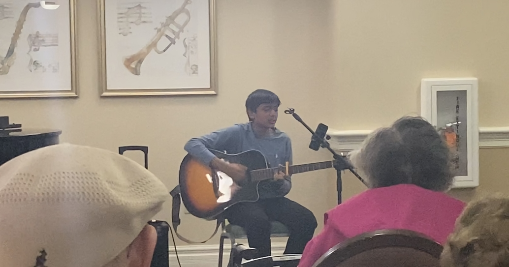
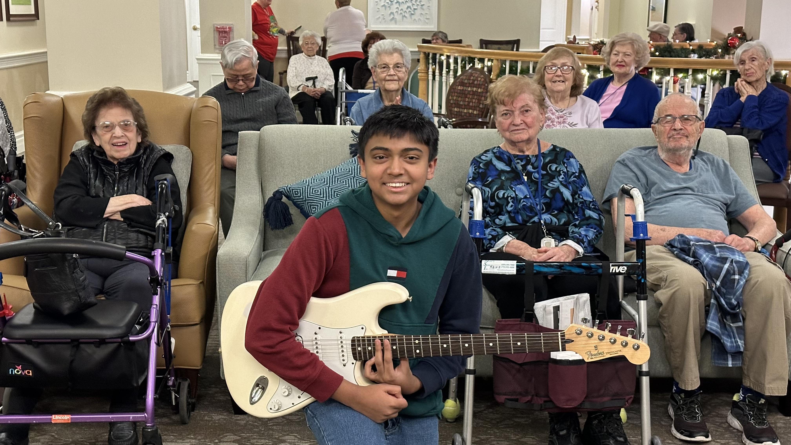
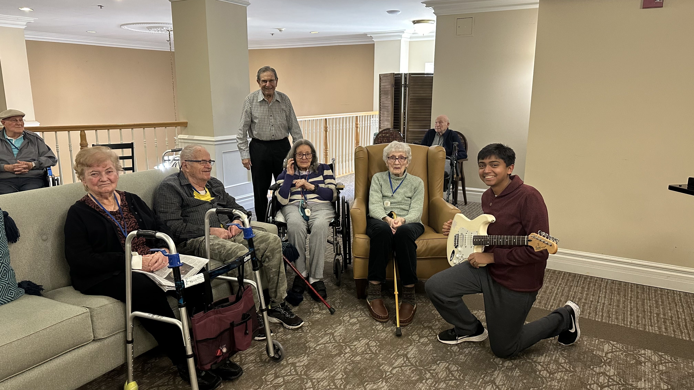
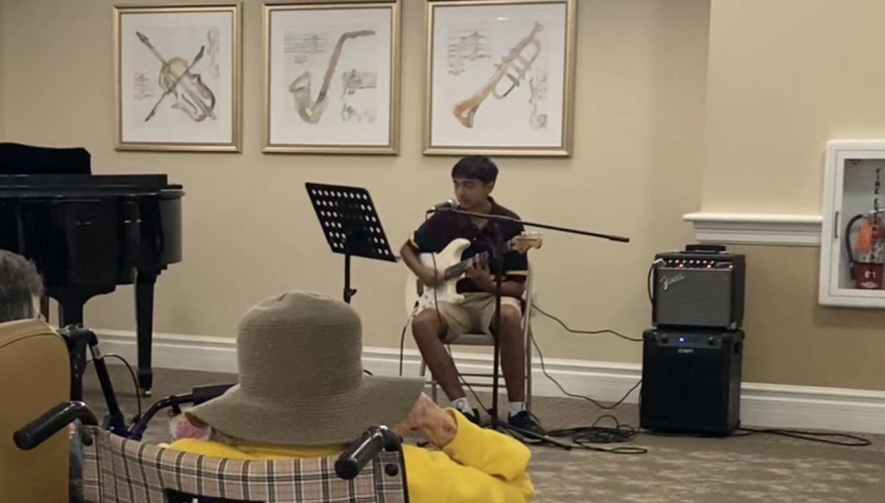
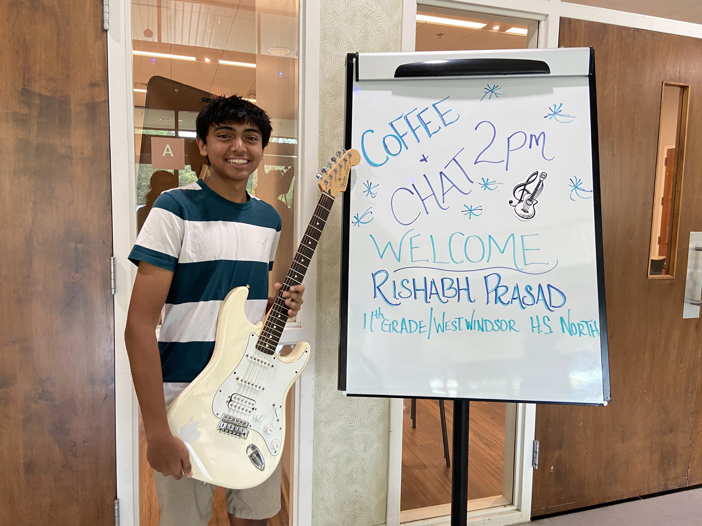
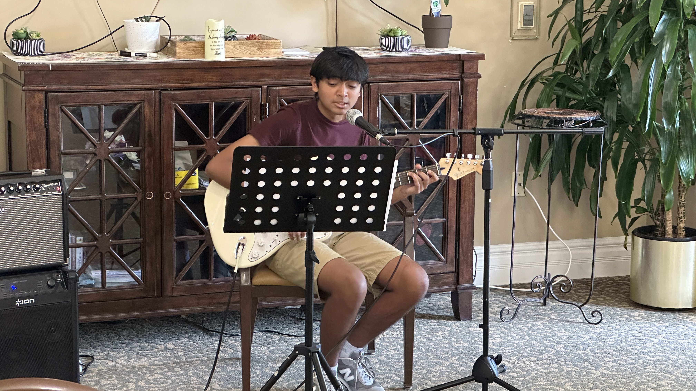
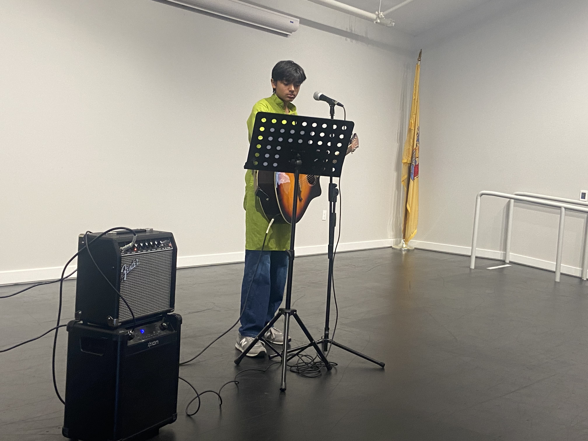
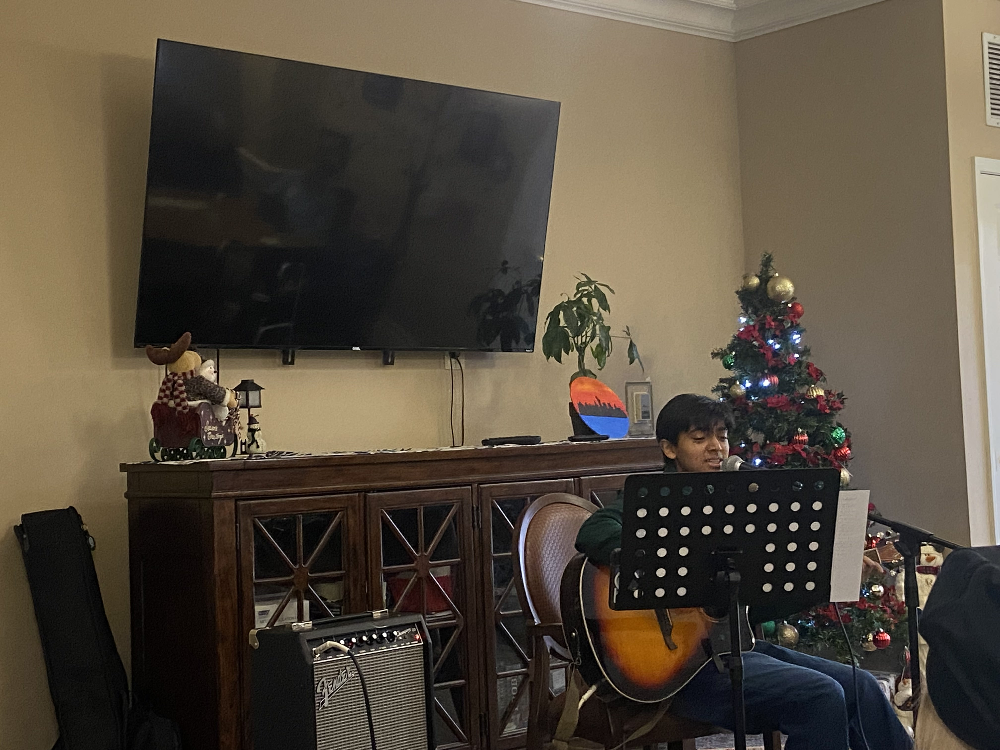
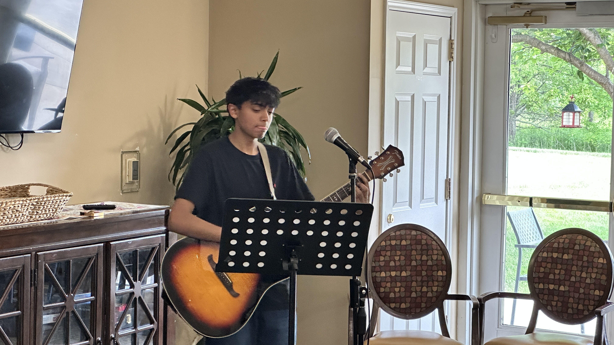
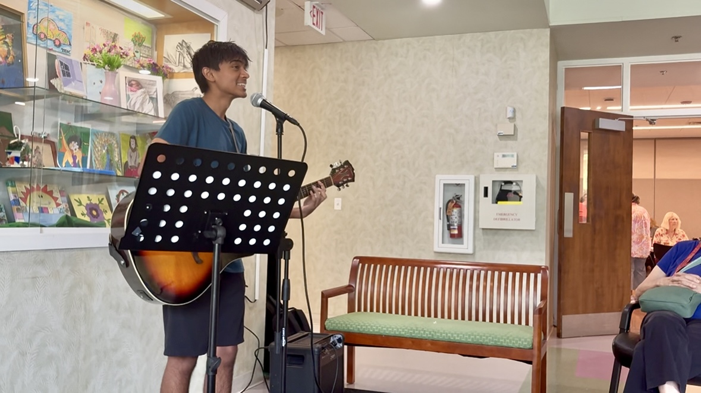

Senior Center Highlights
Performance at Bear Creek Assisted Living
Giving Thanks in Harmony
Celebrate the spirit of gratitude with melodious tunes perfect for Thanksgiving.
Performance at Bear Creek Assisted Living
Holiday Cheer and Christmas Jingles
Join in the festive fun with classic Christmas songs and sing-alongs.
Performance at Bear Creek Assisted Living
Retro Rhythms: A Journey Back in Time
Travel back to the golden days with timeless classics and nostalgic tunes.
Performance at Bear Creek Assisted Living
Golden Memories: Slow Tunes from the Past
Relax with soothing melodies from the good old days.
Performance at East Windsor Township Senior Center
Coffee & Melodies: Music to Warm the Soul
Enjoy a cozy gathering with warm coffee and gentle tunes.
Performance at East Windsor Township Senior Center
Bollywood and Beatles A Cross Cultural Celebration
From timeless Bollywood hits to classic tunes by The Beatles, this performance brought cultures together one song request at a time.

Performance at West Windsor Senior Center
Summer Serenade Music Under the Sun
A breezy afternoon of joyful melodies and feel good tunes to celebrate the season of sunshine.
Performance at East Windsor Township Senior Center
Festival of Lights: A Diwali Musical Tribute
Celebrating Diwali with soulful Bollywood classics and a heartfelt glimpse into the meaning of the holiday.
Performance at West Windsor Senior Center
Holiday Harmonies: A Christmas Celebration
Spreading holiday cheer with classic carols and lively sing alongs to warm the heart.
Performance at West Windsor Senior Center
All You Need is Love: Beatles Night
An evening dedicated to the unforgettable sounds of The Beatles with music that is timeless, nostalgic, and full of love.
Performance at East Windsor Township Senior Center
Golden Grooves: Dancing Through the Decades
An uplifting show of legendary hits that had everyone tapping their feet, singing along, and dancing with joy.
